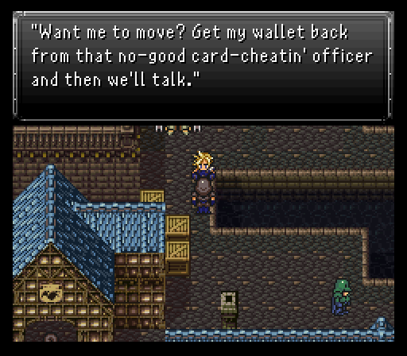
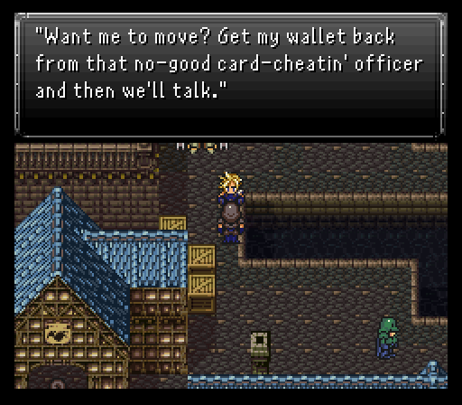
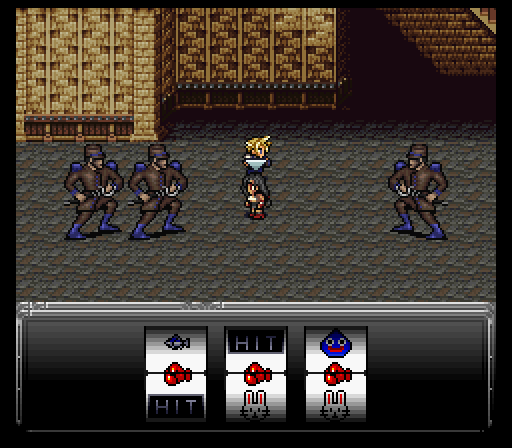
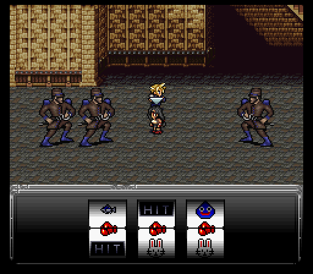
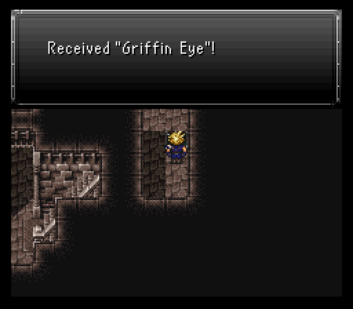
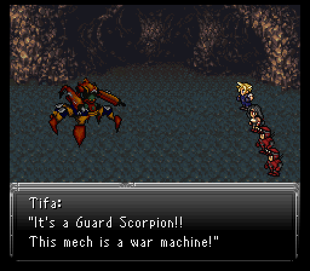
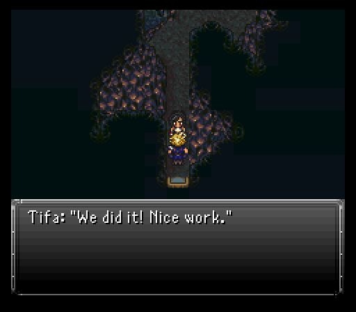

Part 6: Crossover Madness
Cloud's infiltration mission

This scenario has us in control of Cloud as he searches for a way to get out of Seascape Town and back to Fraust.
The basic premise is the same as it was in vanilla...get into the rich man's house. With all the Imperial soldiers around though, he's going to have to take a few extra steps to get in safely.
First, Equip Cloud with the Vendetta, then go into sorcerer-turned-drunkard Shang Tsung's house and speak to the kid downstairs, then head to the item shop and talk to the merchant right next to the clock and beat him up in combat to get the kid's pocket watch. Bring it back to him and he'll let you pass. You could also try to force your way through the Prototype guarding the only other viable way forward. If you lose, you'll just be taken back to the start again.
 

Either way you take, there's a guard blocking your way to the southwestern portion of town. He wants you to grab his wallet back from the jerk officer on the balcony just north of the chocobo rental house. On the way to him, stop by the armor shop and chat with a woman next to the counter. She's selling a dress for very cheap that you'll need to break in to the mansion.

After the wallet is collected by beating up the rogue soldier and returning it to its owner, the rest of this first portion is just like vanilla. Beat up a merchant in the pub's basement, take the rum to Shang Tsung, then go to the child at the bottom of the nearby staircase and choose the third option, "Clock", to have him open the secret passage.
From there, things are the same (with a bonus of Cloud saddling into his iconic dress from his native game). Once you get into the rich man's basement, one of the doors has a very familiar face, both for Cloud and for us. It's none other than Tifa who's been imprisoned for her traitorous ways, likely to have been executed had Cloud not come along and rescued her.

Tifa is much like Ronan in the sense that she can equip two fist weapons, but where she diverges is the fact she has magic at her command. Whereas Aurora was focused more on offense, Tifa's starting spell set lends her to a more support focused role. Having Protect & Shell at the ready is going to be so very useful to cover any gaps.
Her unique command is Reels. Setzer's slots from vanilla in essence, just Tifa themed with some of her well known limit breaks from her native game, such as Beat Rush and Waterkick. A failed combo results in a minor heal for the entire party on top of curing some basic ailments which is really handy.
Reels:
- 3 gloves: Beat Rush - Non-elemental attack
- 3 slimes: Water Kick - Water-type attack
- 3 fish: Wave Cutter - Wind-type attack
- 3 dragons: Summon Bahamut - Summons Bahamut, uses Akh Morn
- 3 hit: Summon Random Esper - Summons a random Esper
- 3 bunnies: Joker's Death - Kills all enemies
- 2 bunnies + 1 hit: Joker's Death 2 - Kills all allies
- Fail: Lucky Bunny - Heals party and cures status ailments
After gearing Tifa up, check the sleeping soldier for a Clock Key, then try to leave. Turns out there's competent soldiers in the Empire as they attack the duo in a pincer attack after waking up the sleepy soldier. Despite this, my Cloud & Tifa have enough power between them to knock out a Lieutenant in one attack each, meaning I don't have to worry about healing.
 

After the fight, Tifa will instruct you to locate a couple Crimson Blade members who were taken prisoner. There's a hidden switch next to the bookcases to the west of Tifa's cell that opens the way to the basement. Kill the Mage Knight jailor down here, claim his key, then open the two cells to get two new party members in Warren & Gus.

Gus has Jump which is always nice, but Warren has the highly useful Mimic command. Yes, he can mimic Cloud's Climhazzard wind-up and counter if you want. Can even double down on MT Cure spells from Tifa. Or if Tifa gets lucky with Reels and summons Bahamut or a random esper, so can he. That's really some talent!
The rest of the escape through the basement area is pretty uneventful. There's a couple new enemies, but neither one pose much of a threat. Grab all the treasures per usual, one of which, the Volt Knuckle, will come in handy soon.
Before leaving this area, make sure to find the hidden passage leading to a staircase down a level for some goodies to grab, namely the very good Griffin Eye relic which blocks a bunch of nasty status ailments. If you did this scenario before Ronan's, it'll be a very good relic for the Skull Train section.
Once you've finally made it out of town, you just need to hoof it back to Fraust. Should be easy...hopefully.
If need be you can go to Ronan's House to rest up or buy items off Neko.
Getting close to the end of the scenario and it's a relatively simple trip to the end. The treasure chests have all closed again, so be sure to grab everything. There's new enemies that are more annoying than the ones in Seascape Town's basement area, but still nothing that should be difficult for you to handle if you wish. Exolurks inflict stop, for Red Crawlers it's poison, and Ursa Minors have strong physical attacks and the most hp. The Red Crawlers can drop Spider Fangs (knuckle weapon), so you'll want to hopefully score at least one of those. They'll come in handy moreso for Ronan's scenario.
When you get to the healing spring though, best to prepare by equipping any auto Shell relics to Cloud & Tifa if you have them. Otherwise, just go with whatever, especially the two relics from the cells the Crimson Blades were in (Dwarf Bracer which boosts might by 50% and the always awesome Speed Boots).
As you try to exit, whatever's been making some rumbling noises decides to come out and play...and what do you know, it happens to be a machine Cloud & Tifa are quite familiar with from their native game, the classic Guard Scorpion.
Guard Scorpion is the wake up call for anyone thinking they're getting off free with an easy scenario. Even then though, it pales compared to Ronan's scenario. While its physical strikes can do around 300 or so damage before buffs are up, it doesn't go gun crazy with AoEs like some previous bosses have.
Among the named attacks, most are single target affairs like Missile (Seizure + damage based on target's current hp), Smokescreen (blind), Cave In (Gravity-type + Seizure), Shock Wave, and Magitek Laser.
The AoE moves are few and far between here with a couple new moves in Nether Shot (Light damage, inflicts poison) & Anti-Magic Field (Should really be anti-buffs field because this move will rip off any non perma buffs a character has if it connects on them).
There's precisely two attacks that are very dangerous in the fight. One of them is the AoE attack Magnitude Eight. Without Shell active, you're looking at 400-450 damage per character. So long as those Shell buffs are up, a multi target Cure from Tifa + Warren mimicing that should get everyone out of the danger zone.
The other dangerous move comes after Guard Scorpion uses Search Scope. That means the targeted character is getting blasted by Orb of Travel next turn. This move does damage based on how many steps you've taken in your quest thus far. If you come here as your first or second scenario tackled, it shouldn't be too nasty.
Best strategy here is to have Cloud on nearly full time offense, only stopping to dispense Potions or other items if the situation requires it.
Tifa sets up buffs for the majority of the battle. Protect is the most important since you'll see more physical strikes then anything else, but don't forget about Shell to take some of the sting off of Magnitude Eight.
As for the Crimson Blade duo, they can contribute nicely to the battle as well. Gus can jump like a madman or dispense Potions while Warren waits to mimic whatever move you want to double up on, be it Cloud's limits, Tifa's reels, or even item usage.
Before you dismantle the mecha scorpion for good, steal its Plate Mail with a Thief Knife equipped Cloud.
Once the mecha is down for good, the two Crimson Blade members go on ahead to Fraust with Cloud & Tifa right behind after a short conversation. Next up is by far the longest scenario, Ronan's.